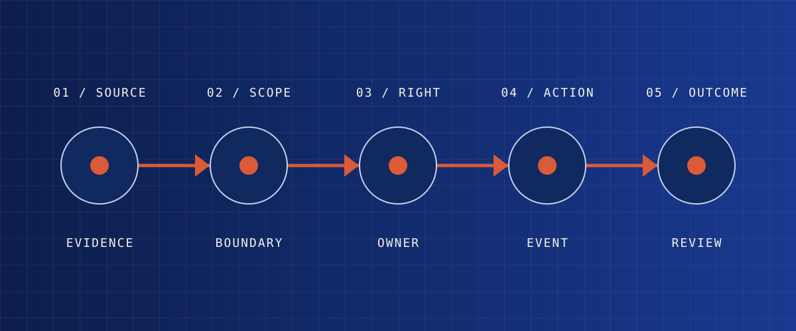

03ARECORD
ANATOMY
ANATOMY
Logs keep events. Records preserve meaning.
A timestamp alone cannot tell a subsequent reviewer why an action was allowed, who had the right to make it, what alternative was considered, or whether the outcome was acceptable. A traceable record gathers the smallest set of facts required to reconstruct responsibility and consequence.

Evidence
What was observed, supplied, retrieved, or uncertain at the time of the decision?
Boundary
Which resource, policy, condition, and limit applied to this exact event?
Decision owner
Who could recommend, authorize, execute, stop, or resolve this action?
Actual event
What was proposed, authorized, and ultimately performed—not merely what the system intended?
Review
What changed, who was affected, what evidence confirms it, and what uncertainty remains?